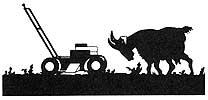
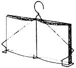
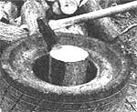
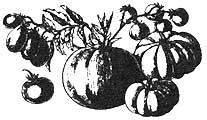

Unless you have goats to keep fast-growing summer grass from turning your yard into a hayfield, it's time to haul the lawn mower out of storage, clean it up, and get with the old push-and-pull routine again. Accordingly, our first tip this time around comes from Kenneth Hubbard of East Aurora, New York, who has some advice on mower maintenance.
"The real key to a smoothrunning, clean-cutting mower," Kenneth says, "is to have a blade that's not just sharp, but perfectly balanced, too. To get both, place the blade in a vise and hone both ends with a file, as you normally would. Then remove the blade and clamp a headless finishing nail between the jaws of the vise so that it extends horizontally. Now, hang the mower blade on the nail by the drive-shaft hole. The blade will tilt downward on the end that's heaviest. To balance it, simply file the weightiest end until it hangs level.
The result will be a sharp and perfectly balanced blade that will take a lot of the vibration out of your mechanical goat."
Let's head for the kitchen and give a listen to what Shauna Ellet of Rockdale, Texas has to say: "Here's a handy idea I discovered a few years ago that helps me when I'm cooking from a cookbook . . . particularly if it's one of the smaller paperback volumes that are difficult to keep open to the page I want. Using a wire coat hanger, bend the corners in and around, then bend a small V in the center of the bottom for the book to rest on (see illustration). Place the device on a table or hang it on the knob of a cabinet door for eyelevel reference while cooking. The hanger can easily be adjusted for various book sizes, too."
Whether you're still building fires for cool nights or are already getting a head start on next fall's woodcutting chores, here's a tip that should help you to save time and energy. It comes from Clarence Nye of Hummelstown, Pennsylvania. Clarence writes that he uses "an old, discarded 16" tire as a log holder when splitting firewood. The tire's 'doughnut hole' takes logs up to 15" in diameter and has several advantages: It is portable and can be rolled from one woodpile to another, it'll last for years, and it's free. I like it because I don't have to reset my wood with every split I make, and the pieces don't fly all over the place (including into my shins!). And at the same time, the tire cushions the maul's handle and reduces the risk of splitting and splintering. The idea may be `tired', but I get my wood split a lot faster and with a lot less effort, too."
Roberta Forpahl of Centennial, Wyoming submitted this tip, which is also related to the woodpile: "Always searching for ways and things to recycle, my husband came up with a use for an otherwise useless automobile inner tube . . . as a cover for the blade of his chain saw. If you want to try it, just cut the tube a few inches longer than the bar of your saw and slip it on to protect the chain and anything (or anyone) it might come in contact with while being transported."
"We have lots of cedars on our place," says Michael Walton of Benton, Arkansas, "and when we cut them, we make full use of all the wood. The small branches and foliage are put through our shredder/grinder, and the resulting chips are used as 'litter' on the chicken-house floor. The hens love it, and we're never bothered with lice or other pests. After a term in the poultry house, the litter goes to the compost pile or is spread on the garden as mulch. We use the larger limbs for firewood, kindling, and stakes for the garden."
Folks with an abundance of home-canned tomatoes on hand should appreciate this recipe submitted by Oliver Jones of Corning, Arkansas. Oliver's "easy and delicious" homemade soup is a blend of a quart of canned tomatoes, 1/2 teaspoon of baking soda, 2 teaspoons of butter, and a quart of fresh whole milk. He slowly brings the mixture to a boil, removes it from the heat, and then enjoys a hearty and healthful homemade soup.
And for this issue's final reader-to-reader tip, we'll give the lectern (podium? page?) to Louis Brodrick of Hot Springs, Arkansas. Regarding septic tank maintenance, Louis writes, "To reactivate a `lazy' septic tank, we mix a pound of brown sugar with an envelope (one tablespoon) of dry yeast. We then flush this mixture down the toilet to promote anaerobic bacteria action, the `muscle' of a hardworking septic system. And instead of having our tank professionally cleaned when it backs up, we just remove the lid, break up the top crust with a pole, and add water until the fluid in the tank begins flowing into the field lines again. We've used this moneysaving procedure for years now, and it always works."
Through the years we've all probably discovered a few practical down-home, time-tested solutions to the frustrating little problems of everyday life. Why not share your best "horse sense" with the rest of MOTHER's readers? Send your suggestions to Country Lore, THE Mother Earth News (restricted) , 105 Stoney Mountain Rd., Hendersonville, NC 28791. A one year subscription-or a one-year extension of an existing subscription-will then be sent to each contributor whose tip is printed in this column.-MOTHER.
|
 |
 |
 |
|
|
 |
|